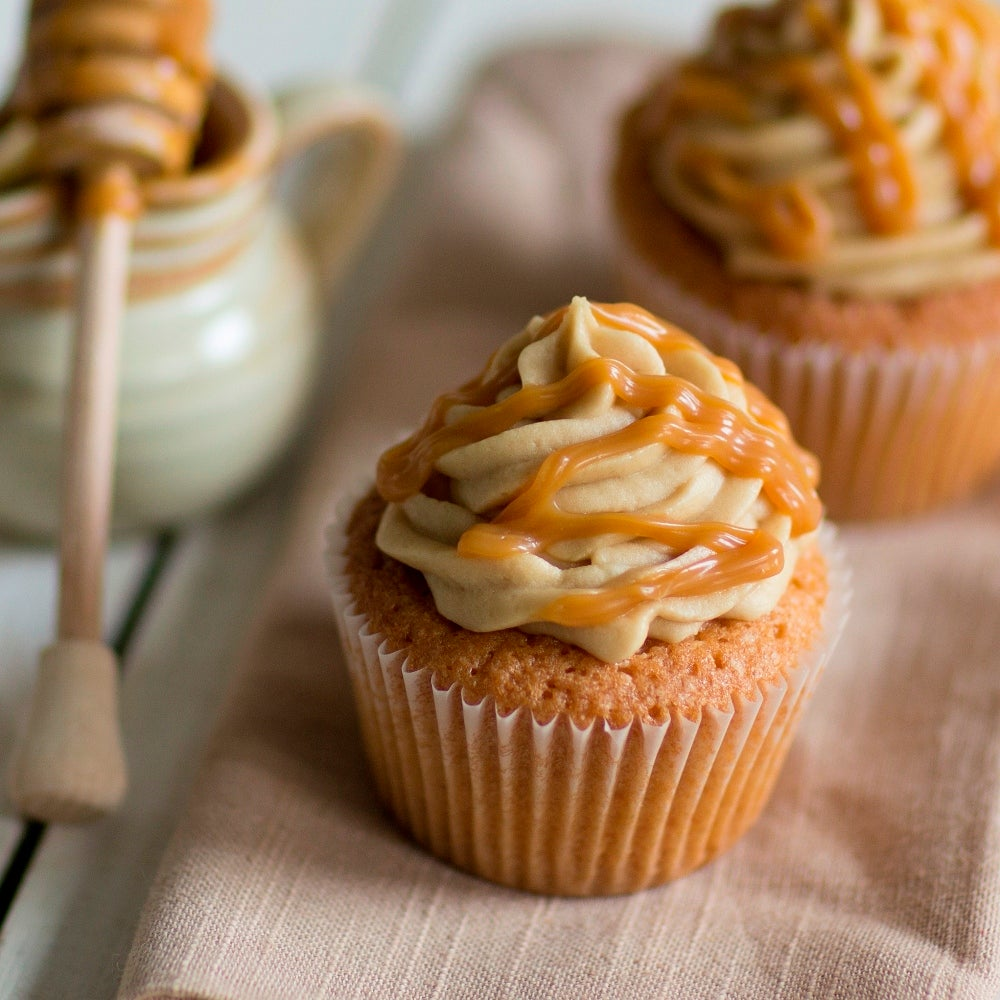

Charamel muffin

Ingredients
- 250 g flour
- 100 g sugar
- 100 ml vegetable oil
- 2 eggs
- 1 tsp vanilla extract
- 2 tsp baking powder
- 200 ml milk
- 50 g flaked almonds
- 100 ml salted butter caramel
- pinch of salt
Instructions
- In a large bowl, mix the eggs with sugar, salt and vanilla extract. Whisk carefully.
- Add the vegetable oil.
- Mix the flour with baking powder and add with the milk to the mixture.
- Prepare the muffin moulds with baking paper to avoid sticking.
- Fill half of your muffin moulds with the batter.
- Place a teaspoon of caramel and fill the rest of your mould.
- Decorate your muffins according to your taste.
- Bake for 20 to 25 minutes in a preheated oven at around 360 degrees F.
- Pour some melted caramel on top of the muffins when they ready and warm.
Return to main page